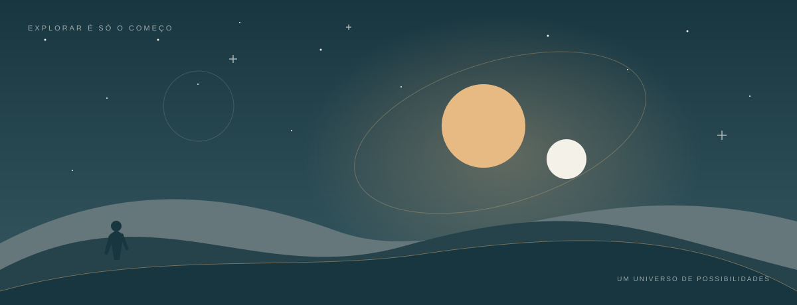

ALÉM DO CÓDIGO / MEUS INTERESSES
Um universo de
possibilidades.
Ficção científica, imaginação
e ideias que podem virar projetos.

01 / HISTÓRIAS QUE INSPIRAM
Explorar mundos.
Imaginar novas ideias.
Star Wars é o ponto de partida deste espaço de interesses. Seus mundos, personagens e histórias permitem pensar em criatividade, escolhas e diferentes formas de contar uma jornada.
Também é um tema para praticar desenvolvimento web: reunir referências, organizar informações e transformar esse universo em uma experiência que faça sentido para quem visita a página.
Visitar o site oficial de Star Wars (abre em nova aba)02 / DO HOBBY AO PROJETO
Três ideias para colocar em prática.
Um guia de mundos
Uma página com cenários, descrições curtas e imagens para praticar títulos, parágrafos e caminhos relativos.
Um diário de descobertas
Notas sobre histórias e personagens para experimentar listas, tabelas e organização semântica do conteúdo.
Um espaço para fãs
Uma apresentação temática para praticar identidade visual, navegação e adaptação a diferentes telas.
03 / PAUSA PARA OUVIR
Sinal orbital.
Uma paisagem sonora curta para acompanhar o tema de exploração espacial. Tons suaves sugerem uma transmissão atravessando uma galáxia imaginária.
Sinal orbital
Áudio original · 12 segundos · WAV
Fonte: síntese sonora original criada pelo assistente para este projeto. Não é uma trilha oficial de Star Wars.
Baixar o áudioMais uma descoberta para o meu caminho.
Voltar à página pessoal